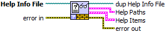

Owning Palette: VI Helpeks API
The VI reads the Help Info File generated by VI Helpeks during help generation. The Help Info File contains information about the source VIs, their respective HTML files, and the information required for linking them. It also indicates details on .HHP and .CHM files if any were generated.
 |
Click the parameters for details |